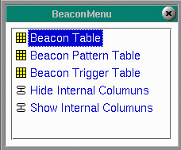

|
The Beacons menus are provided for setting up beacons. Beacons can be set up to indicate a condition with either a steady or flashing pattern using the following menus: Selecting Beacons displays a menu of 5 options.
|  |
Copyright © 2001 Fortna Inc. All rights reserved.